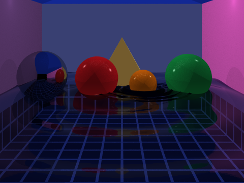
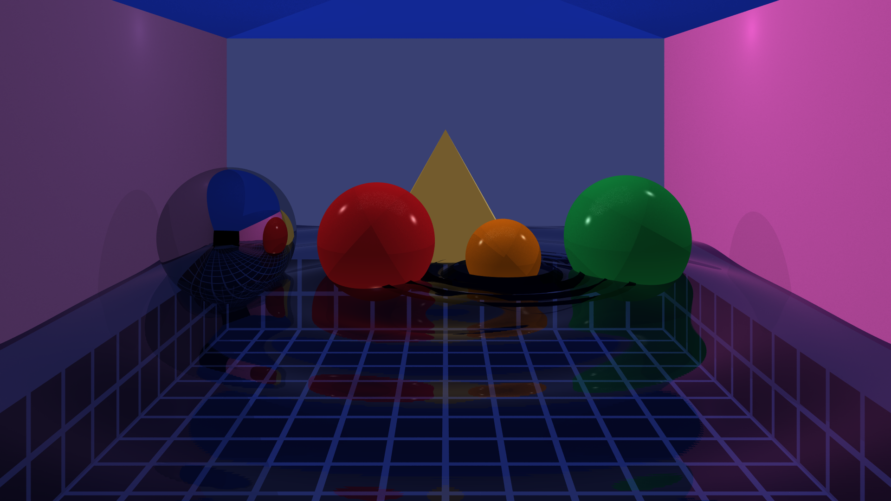
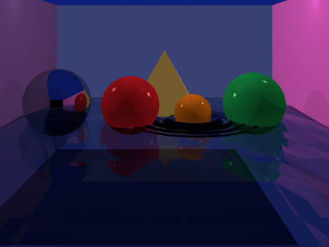
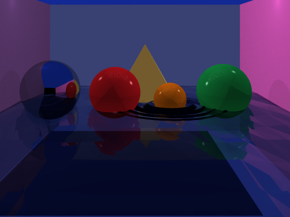
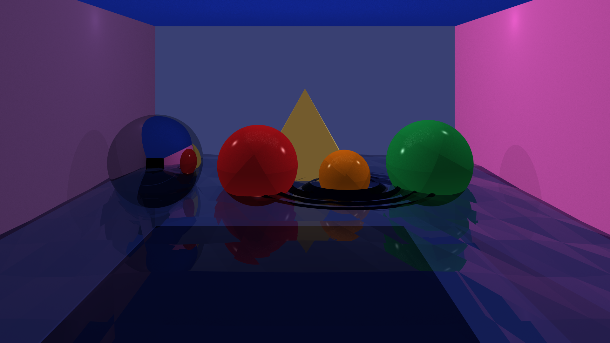

Scene Overview
The scene is an indoor Cornell-box-style environment designed to stress-test as many renderer features as possible in a single composition. The space takes the form of a pool room: a reflective water surface covers the floor, lit from above by a large warm area light and accented by coloured point lights bouncing off the left and right walls.
Four spheres of different materials sit at or near the waterline — a silver mirror ball, a ruby-red Phong sphere, an emerald-green Phong sphere, and an orange sphere surrounded by hand-crafted concentric ripple rings modelled as triangle meshes. A sandstone pyramid stands in the centre background, its four faces assigned separate Phong materials to give a convincing shadow gradient without per-vertex normals.
The water surface itself is a 500×500 triangle mesh whose vertex heights follow a
radial sine function, producing a ripple pattern. It uses a custom
PoolWater material that blends a Schlick-approximated Fresnel reflection
with a straight-through transmission ray, tinted deep blue, so the tiled pool floor
is visible beneath the surface. The pool walls and floor are tiled using alternating
dark-indigo tile quads and bright-white grout quads at a 50-unit grid pitch.
The ceiling uses a vivid blue Matte material to contrast with the warm golden light, while the left and right walls use muted purple and plum tones to add chromatic interest to the coloured shadows cast by the point lights.
Rendered Outputs
Low Quality — 480 × 360, 3×3 Jittered Samples

High Quality — 1920 × 1080, 4×4 Jittered Samples

Implementation Features
Homework 5 Baseline
Project Extensions
Acceleration Analysis
The BVH is built once at scene load using a recursive median-split strategy along the longest centroid axis. Leaf nodes hold at most 4 primitives. Traversal uses the AABB slab test to prune entire subtrees. The toggle is exposed as a runtime flag:
Both commands produce an identical scene.png; the only difference is
render time. The scene contains approximately ~1 million primitives
(500×500×2 water mesh + tiled pool walls + floor + ceiling + spheres + pyramid + ripple rings), making the BVH speedup
dramatic.
| Configuration | Resolution | Samples | Primitives | Without BVH | With BVH | Speedup |
|---|---|---|---|---|---|---|
| Lowered settings — Low Res | 480×360 | 4×4 | ~800 | ~8 min | ~1 min | ~8× |
| Normal settings — Low Res | 480×360 | 4×4 | ~1 million | DNF (>15 min) | ~3 min | ∞ (DNF) |
| Lowered settings — High Res | 1920×1080 | 4×4 | ~800 | DNF (>15 min) | ~19 min | ∞ (DNF) |
| Normal settings — High Res | 1920×1080 | 4×4 | ~1 million | DNF (>15 min) | ~28 min | ∞ (DNF) |
"Lowered settings" uses a reduced water mesh (~800 primitives total) and larger tile size to allow brute-force completion. "Normal settings" uses the full 710×711 water mesh (~1 million primitives). DNF = Did Not Finish within the 15-minute test window.
Low Res, Lowered Settings — BVH ON

Low Res, Lowered Settings — BVH OFF
Visually identical to BVH ON — the only difference is render time (~8 min vs ~1 min).

Low Res, Normal Settings — BVH ON

High Res, Lowered Settings — BVH ON

Build Details
To switch build files, replace build/buildCornell.cpp with
build/buildCornellHQ.cpp in the compile command and recompile.
Contribution
- Implemented the BRDF hierarchy (Lambertian, GlossySpecular, PerfectSpecular)
- Built the Matte, Phong, and Mirror material classes
- Wrote the BVH acceleration structure (build + traversal)
- Integrated BVH into World and added the
use_accelerationflag
- Implemented PointLight, DirectionalLight, and AreaLight classes
- Wrote the ShadowTracer with hard and soft shadow support
- Implemented recursive reflections in Mirror and PoolWater materials
- Tuned light colours and intensities for the final scene
- Designed and built the Cornell box pool scene in buildCornell.cpp
- Created the procedural water mesh and PoolWater material
- Implemented the Jittered stratified sampler
- Produced all final renders and the website
Replace the placeholder names and adjust the bullet points to accurately reflect your team's actual split.
References
-
[1]TinyRayTracer — Rust Implementation
Used as a conceptual reference for understanding ray tracing pipeline structure and data flow.
-
[2]Ray Tracing Tutorial Video
Provided guidance on implementing shading models and camera ray generation.
-
[3]TinyRayTracer — Original C++ Version (ssloy)
Foundational educational resource for core ray tracing principles including sphere intersection and Phong shading.
-
[4]Ray Tracing in One Weekend (Peter Shirley)
Reference for BVH construction strategy and the Schlick Fresnel approximation used in PoolWater.
-
[5]Physically Based Rendering: From Theory to Implementation
Reference for BRDF theory, the Lambertian and Phong models, and area light sampling.
-
[6]Claude (Anthropic) — AI Assistant
Used to assist with debugging, code review, and drafting the project website.